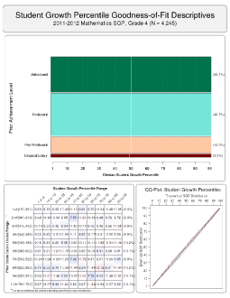

The SGP Package
Student Growth Percentiles & Percentile Growth Trajectories/Projections
The SGP Package (SGP, 2013) is an open source software package built for the open source R software environment (R Development Core Team, 2013). The classes, functions and data within the SGP package are used to calculate student growth percentiles and percentile growth projections/trajectories using large scale, longitudinal assessment data. The methodology uses quantile regression to estimate the conditional density associated associated with each student's achievement history. Percentile growth projections/trajectories are calculated using the coefficient matrices derived from the quantile regression analyses and specify the percentile growth required for students to reach future achievement targets.
- Web site: http://SchoolView.github.com/SGP/
- CRAN Web site: http://cran.r-project.org/web/packages/SGP/
Install stable CRAN release
install.packages("SGP")
require(SGP)
Install latest development release from Github
install.packages("devtools")
require(devtools)
install_github("SGP", "SchoolView")
require(SGP)
To install from Github you might need: Windows: Rtools (http://cran.r-project.org/bin/windows/Rtools/), OS X: xcode (from the app store), Linux: apt-get install r-base-dev (or similar).
Getting Started
Analysis of data utilizing the SGP methodology requires, broadly, two steps: Data Preparation and Data Analysis with these two steps consisting of several substeps:
- Data Preparation
- Preparation of data into LONG format.
- Data Analysis
Data Preparation
The following provides thorough SGP data formatting/preparation specifications for utilizing the utility function of the package (SGP:2013). To help illustrate these specifications there is an embedded data set, SGPstateData, within the package. The development team uses this data set frequently to test new features included in the package. Ensuring your data is set up in the proper format will minimize later efforts to run analyses. The goal, if you supply properly formatted data, is to make generation of student growth data and associated visualizations as easy as abc.
Data must be in long format
The first and most fundamental requirement for the data is that it must
be in long, as opposed to wide, format. For our purposes, this means
that each row represents a unique student by content area by year
combination. This uniqueness is relaxed somewhat with the addition of a
VALID_CASE variable that defines which case is unique if there are
duplicate records by student, content area and year. Thus, in the final
long file, each student, by content area by year by valid case
identifier must be unique. By contrast, a row in the wide data format
would contain all available information for a single student. For
example, here are the first four rows (only the first 8 columns) of the
sample data:
> sgpData_LONG[1:4,1:7]
ID LAST_NAME FIRST_NAME CONTENT_AREA YEAR GRADE SCALE_SCORE
1 1000079 Nixon Daniela MATHEMATICS 2006_2007 8 463
2 1000079 Nixon Daniela MATHEMATICS 2007_2008 9 519
3 1000079 Nixon Daniela READING 2006_2007 8 587
4 1000079 Nixon Daniela READING 2007_2008 9 614
Notice that the same student is in each row, but that the rows represent different grades and content area combinations. This is what is meant by long formatted data.
Required Variables
The following list gives the columns that are required for the calculation of Student Growth Percentiles and how they should be formatted (if applicable). The user is not required to use the same naming conventions as outlined here. A variable name lookup table discussed in the next section can be provided to allow user names to be translated back and for to SGP names.
IDThis field contains the unique student identifier. Values will be set to class character.CONTENT_AREAThis column describes the content area for a given row. Most datasets would presumably contain MATHEMATICS and READING, but other values are possible. If your analyses uses the embedded meta-data SGPstateData, then the values ofCONTENT_AREAmust be capitalized and match the states’ assessment information contained in SGPstateData. These values should be of class character.YEARThis column gives either the academic year (e.g., 2006_2007 as in the sample data) or the year in which the assessment took place (e.g., 2007). If the latter form is used, the class of this column should be set to integer. Hyphens may NOT be used (e.g., 2006-07).GRADEThe grade in which the assessment was administered. The column of this class should be set to integer.SCALE_SCOREThe assessment scale score for each observation. This column’s class should be set to integer or numeric.VALID_CASEThis column identifies those students who should be included in subsequent analyses (value set to VALID_CASE) and those that should not be included (value set to INVALID_CASE. Duplicate cases are often left in the data and flagged as an INVALID_CASE.
Secondary Columns
Although these columns are not required for Growth Percentile analyses, they are required for Growth to Standard analyses, and/or the visualization and reporting functionality:
ACHIEVEMENT_LEVELThe achievement or proficiency category associated with each observed scale score. Values in this column should be set to factor, and should match the assessment program information included in contained in the SGPstateData object.ACHIEVEMENT_LEVELshould be a factor.FIRST_NAMEStudent first name. A character or a factor.LAST_NAMEStudent last name. A character or a factor.SCHOOL_NUMBERUnique identifier for the school/institution in which a student is enrolled in a given year. Either an integer or factor.SCHOOL_NAMEName of the school/institution in which a student is enrolled in a given year. A character string orfactor.DISTRICT_NUMBERA unique identifier for the district/educational authority in which a student is enrolled in a given year. Either afactororinteger.DISTRICT_NAMEDistrict/educational authority name in which a student is enrolled in a given year. A character string orfactor.STATE_ENROLLMENT_STATUSBinary indicator of whether the student was continuously enrolled in the state and should be included in summary statistics. Indicator must be afactor, preferably with informative labels such as those in ;Enrolled State: YesandEnrolled State: No.DISTRICT_ENROLLMENT_STATUSBinary indicator of whether the student was continuously enrolled and should be included in district summary statistics. Indicator must be afactor, preferably with informative labels such as those in ;Enrolled District: YesandEnrolled District: No.SCHOOL_ENROLLMENT_STATUSBinary indicator of whether the student was continuously enrolled and should be included in school summary statistics. Indicator must be afactor, preferably with informative labels such as those in ;Enrolled School: YesandEnrolled School: No.GENDERDO WE WANT THIS AND OTHER DEMOGRAPHICS? USER CAN CHANGE SUMMARY GROUPS IN summarizeSGP.ETHNICITYEthnicity needed for randomNames, so maybe these two...
A number of other demographic variables can be provided when creating summaries.
Variable Name Lookup Table
The SGP package utilizes a variable name lookup table to carry out automated analyses.
Please contact @dbetebenner to have assessment data added to this
object.
If a user does not wish to rename the columns in their data to match the
conventions used in the SGP package listed above, the
Variable_Lookup_Table option can be used. The user must supply an
appropriate list of variable names in the var.names argument of the
prepareSGP
function. For example, if a state has a unique student
identifier named ``My_Student_ID" and an assessment subject variable
named ``My_Subject" (all other variable names match), an example call
to prepareSGP
would include this argument:
My_State_Data <- prepareSGP(...,
var.names=list(ID="MyStudent_ID", CONTENT_AREA="My_Subject"))
The var.names list must include all required columns that do not
match the conventions, as well as all secondary columns needed for
summarization and reporting.
Data Analysis
Once a dataset is properly formatted, a comprehensive analysis can be conducted using abcSGP. An example of the call using the sample data is below.
Demonstration_SGP <- abcSGP(sgpData_LONG)
When \(a \ne 0\), there are two solutions to \(ax^2 + bx + c = 0\) and they are $$x = {-b \pm \sqrt{b^2-4ac} \over 2a}.$$
This call returns an object of class SGP named Demonstration_SGP object which contains
student growth percentiles and other information, but it also produces goodness of fit and visualization folders containing files on those two topics.
The function accepts multiple arguments detailed in the
Results
Bibliography
Betebenner, D. W., VanIwaarden, A., and Domingue, B. (2013). SGP: An R Package for the Calculation and Visualization of Student Growth Percentiles & Percentile Growth Trajectories.
R Development Core Team (2013). R: A language and environment for statistical computing. R Foundation for Statistical Computing, Vienna, Austria. 3-900051-07-0.